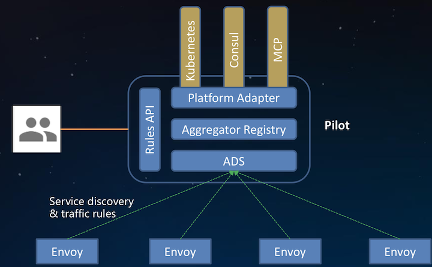
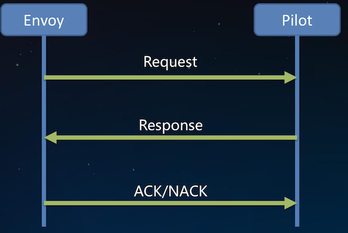
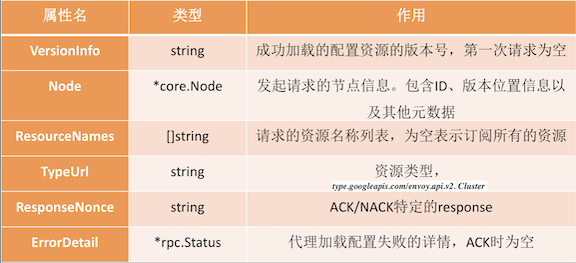
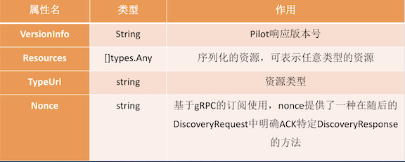
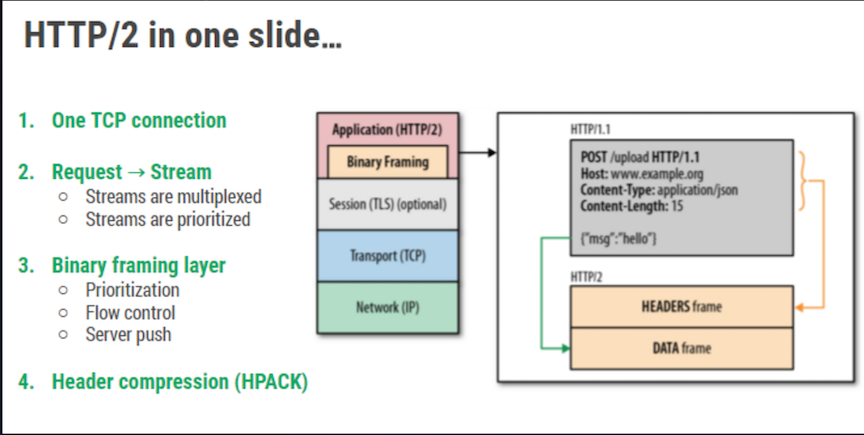
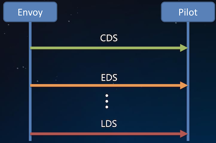
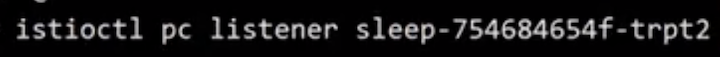
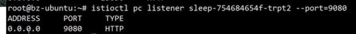
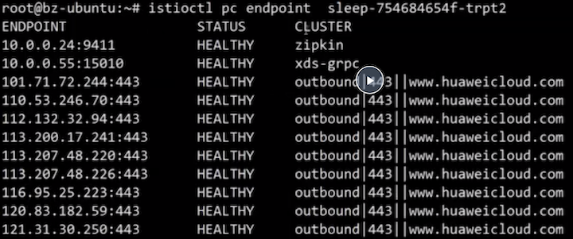

第六节 xDS协议解析
目录
- xDS基本概念
- xDS协议分析
- ADS理解
- xDS的未来
Istio 发现模型

1、xDS是什么
xDS是一类发现服务的总称，包含LDS，RDS，CDS，EDS以及 SDS。
Envoy通过xDS API可以动态获取Listener(监听器)， Route(路由)，Cluster(集群)，Endpoint(集群成员)以及Secret(证书)配置。
1-1 LDS (listener)
Listener 发现服务。
Listener监听器控制Envoy启动端口监听 (目前只支持TCP协议)，并配置L3/L4层过滤器，当网络连接达到后，配置好的网络过滤器堆栈开始处理后续事件。
这种通用的监听器体系结构用于执行大多数不同的代理任务(限流，客户端认证，HTTP连接管理，TCP代理等)。
1-2 RDS (Route)
Route发现服务，用于HTTP连接管理过滤器动态获取路由配置。
路由配置包含HTTP头部修改(增加、删除HTTP头部键值)， virtual hosts· (虚拟主机)，以及virtual hosts` 定义的各个路由条目。
1-3 CDS (cluster)
Cluster发现服务，用于动态获取Cluster信息。
Envoy cluster 管理器管理着所有的上游cluster。
鉴于上游cluster或者主机可用于任何代理转发任务，所以上游cluster一般从Listener或Route中抽象出来。
1-4 EDS (Endpoint)
Endpoint发现服务。
在Envoy术语中，Cluster成员就叫 Endpoint，对于每个Cluster，Envoy通过EDS API动态获取 Endpoint。
EDS作为首选的服务发现的原因有两点:
- 与通过
DNS解析的负载均衡器进行路由相比，Envoy能明确的知道每个上游主机的信息，因而可以做出更加智能的负载 均衡决策。 -
Endpoint配置包含负载均衡权重、可用域等附加主机属性， 这些属性可用域服务网格负载均衡，统计收集等过程中
1-5 SDS (Secret)
Secret发现服务，用于运行时动态获取TLS证书。
若没有SDS特性，在k8s环境中，必须创建包含证书的Secret，代理启动前 Secret必须挂载到sidecar容器中，如果证书过期，则需要重新部署。
使用SDS，集中式的SDS 服务器将证书分发给所有的 Envoy实例，如果证书过期，服务器会将新的证书分发，Envoy接收到新的证书后重新加载儿不用重新部署。
1-6 标准xDS流程

2、xDS协议
xDS协议是Envoy获取配置信息的传输协议，也是Istio与Envoy 连接的桥梁。
Envoy动态的发现服务以及相关资源的API就是指xDS。
xDS可以通过两种方式承载:gRPC(new)、REST，这两种方式都是通过 xDS-API发送DiscoveryRequest请求，然后资源通过 DiscoveryResponse下发。
2-1 DiscoveryRequest

2-2 DiscoveryResponse

3、What is ADS
ADS是一种xDS的实现, 它基于gRPC长连接。gRPC的实现是承载在HTTP/2之上。

3-1 Why ADS
Istio 0.8以前，Pilot提供的的单一资源的DS

- 每种资源需要一条单独的连接
- Istio高可用环境下，可能部署多个
Pilot
带来的挑战:
- 没办法保证配置资源更新的顺序
- 多
Pilot配置资源的一致性没法保证
综合以上两个问题，很容易出现配置更新过程中网络流量丢失带来网络错误(虚假的）
ADS允许通过一条连接(gRPC的同一stream)，发送多种资源的请求和响应。
- 能够保证请求一定落在同一
Pilot上，解决多个管理服务器配置不一致的问题 - 通过顺序的配置分发，轻松解决资源更新顺序的问题
3-2 ADS最终一致性的考量
xDS 是一种最终一致的协议，所以在配置更新过程中流量会丢失。
例如,EDS还没有来，如果通过CDS/EDS获得Cluster X， 一条指向Cluster X的RouteConfiguration 刚好调整为指向 Cluster Y， 但是在CDS/及下发Cluster Y的配置的条件下，到 Y的流量会全部被丢弃，并且返回给客户端状态码503。
在某些场景下，流量丢弃是不可接受的。Istio通过遵循make before break模型，调整配置更新顺序可以完全避免流量丢失。
4、xDS未来发展
4-1 Istio目前是全量的向sidecar分发配置，由此带来几个问题
- 配置更新频率高，大集群的服务，实例数目多，其中有一个更新后便会触发全量的配置推送到所有的
sidecar。带宽占用大，Pilot端cpu利用率高 Sidecar占用内存多，随着集群规模增大，配置资源呈指数级增长，极大的限制了服务网格的规模- 频繁的配置加载影响
sidecar性能稳定性
4-2 xDS未来发展
sidecar按需请求资源，懒加载的方式，当真正的需要流量转发的时候， 再去获取路由等配置- 定义
workload的服务依赖，例如工作负载A可以访问ns1/serviceB - 定义配置规则、
Service的NetworkScope，例如服务A只能被同一Namesapce的workload访问。
4-3 增量xDS
Incremental xDS是一个独立的xDS endpoint，是一种 runtime的动态配置获取方案，用于增量的更新xDS客户端订阅的资源，适用于ADS，CDS和RDS:
- 保证
Envoy按需/懒请求所需要的资源。例如当流量路由到未知的cluster时，Envoy就会请求获取未知的cluster信息。 - 支持大规模可扩展的目标。例如在一个有
100K个服务实例 集群中，如果一个服务实例有更新，管理服务器只需要下发一个Cluster的信息。
5、Demo
$ kubectl get svc
$ istioctl pc listener ***

$ istioctl pc listener *** --port=9080

$ istioctl pc endpoint ***
